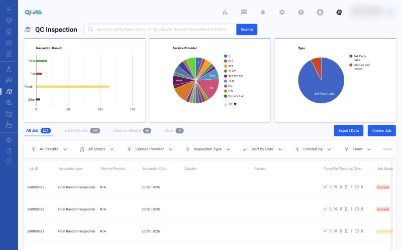
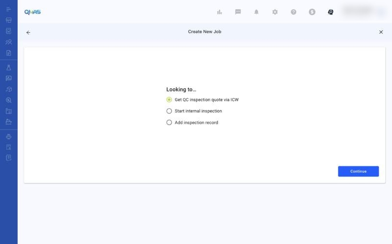
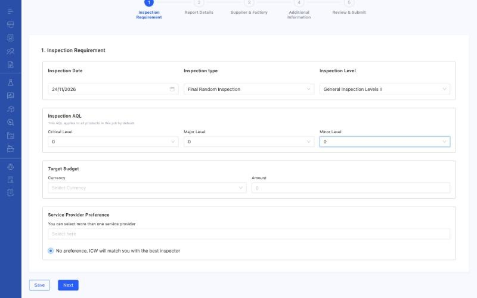
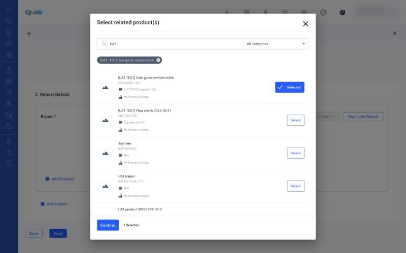
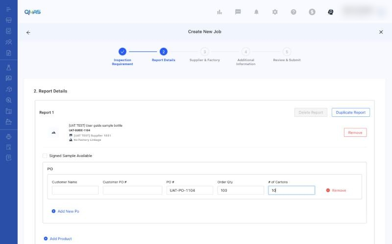
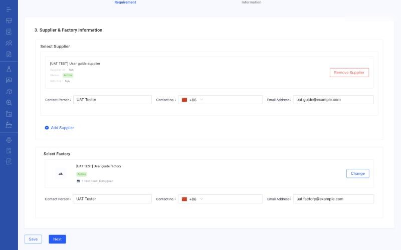
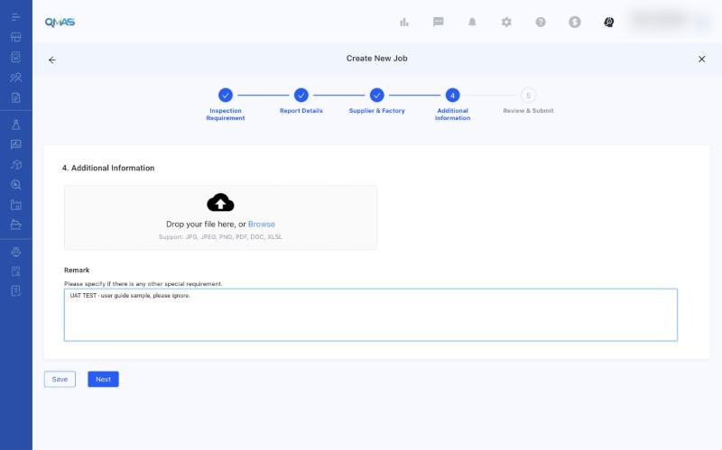
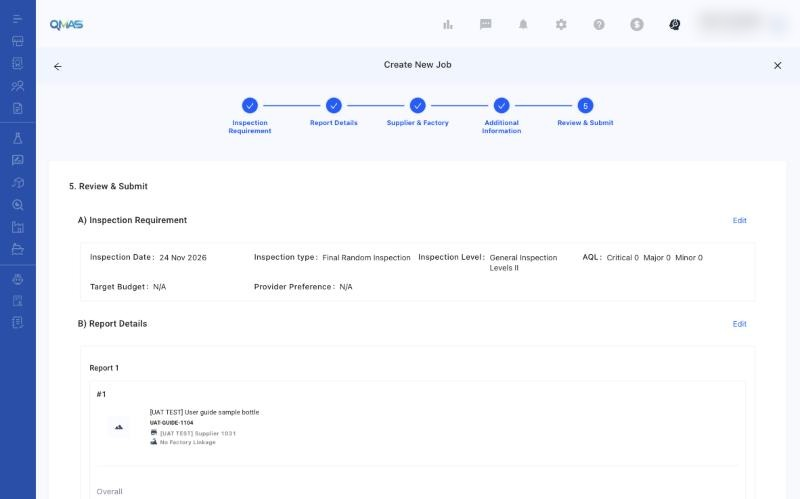
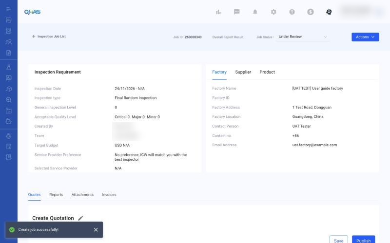

QC Inspection — Get a QC Inspection Quote via ICW
Ask ICW to quote and arrange a third-party QC inspection for your products.
Overview
- Open QC Inspection, click Create Job, choose Get QC inspection quote via ICW and click Continue.
- Inspection Requirement: date, type, level, AQL, budget and provider preference.
- Report Details: products and POs to inspect.
- Supplier & Factory: who makes the goods and where the inspection takes place.
- Additional Information: files and remarks.
- Review & Submit: check everything and click Submit.
Step-by-step
1. Open QC Inspection
In the left menu, open QC Inspection. The charts show inspection results, service providers and job types. Tabs list All Job, 3rd Party Job, Inhouse Record and Draft. Click Create Job.

2. Choose what you are looking for
| Option | Use it when |
|---|---|
| Get QC inspection quote via ICW | You want ICW to arrange a third-party inspector. This guide. |
| Start internal inspection | Your own QC team will inspect. See the Internal QC Inspection guide. |
| Add inspection record | The inspection is already done and you want to record the result. |
Choose Get QC inspection quote via ICW and click Continue.

3. Inspection Requirement
- Inspection Date.
- Inspection type: Final Random, Loading, During Production, Re-Inspection, Initial Production, Fabric, 100% or Vendor Own Inspection.
- Inspection Level: General Inspection Level I–III or Special Level S-1 to S-4.
- Inspection AQL: Critical, Major and Minor levels. They apply to all products in this job by default.
- Target Budget (currency and amount) and Service Provider Preference. Leave “No preference, ICW will match you with the best inspector” selected if you have no preferred provider.

4. Report Details
Click Add Product, search for the product, click Select, then Confirm.

For each product, fill in the PO details: customer name, customer PO #, PO #, order quantity and number of cartons. Use Add New PO for more POs, Add Product for more products, and Add Report or Duplicate Report if you need separate reports. Tick Signed Sample Available if there is one. Click Next.

5. Supplier & Factory
Click Add Supplier and select the supplier. Then click Select Existing Factory and choose the factory where the inspection will take place. Check the contact person, phone and email for each. Click Next.

6. Additional Information
Upload reference files such as tech packs or previous reports, and write any special requirement in Remark. Click Next.

7. Review & Submit
Check the summary. Click Edit on any section to change it. Click Submit.

8. Done — job detail
QMAS shows “Create job successfully!” and opens the job. It has a Job ID and starts as Under Review. The Quotes, Reports, Attachments and Invoices tabs follow the job.

Tips
FAQ
- How do I book a third-party QC inspection?
- Go to QC Inspection (https://qmas.icw.io/inspection), click Create Job, choose Get QC inspection quote via ICW, then complete the 5 steps and Submit.
- What is the difference between a QC inspection quote and an internal inspection?
- A quote via ICW uses a third-party inspector arranged by ICW. An internal inspection is done by your own QC team (Internal QC Inspection).
- Can I save a QC job and finish it later?
- Yes. Click Save on any step. The job is kept on the Draft tab.